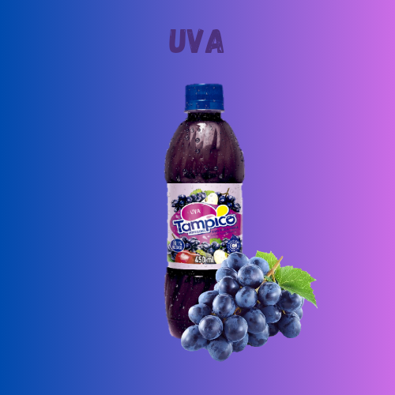
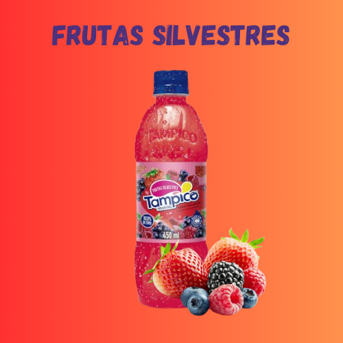

Refresco Sabor Pessego
🍑🍑🍑
Ao saborear o Tampico Pêssego, somos transportados para um mundo de suavidade e doçura.
Cada gole de Tampico Pêssego nos envolve com um aroma suave e frutado, trazendo à mente os pomares repletos de pêssegos maduros. É como se estivéssemos mordendo um pêssego suculento e suave, desfrutando de sua doçura natural.
Seja em um dia quente de verão, em um encontro com amigos ou em um momento de relaxamento em casa, o Tampico Pêssego sempre traz uma sensação de prazer e frescor. Seu sabor suave e frutado é capaz de criar momentos agradáveis e refrescantes, tornando qualquer ocasião especial.
| Outros Sabores | ||
|---|---|---|
|  |  |  |
| "Grape Punch" | "Wild Berry Punch" | "Citrus punch" |